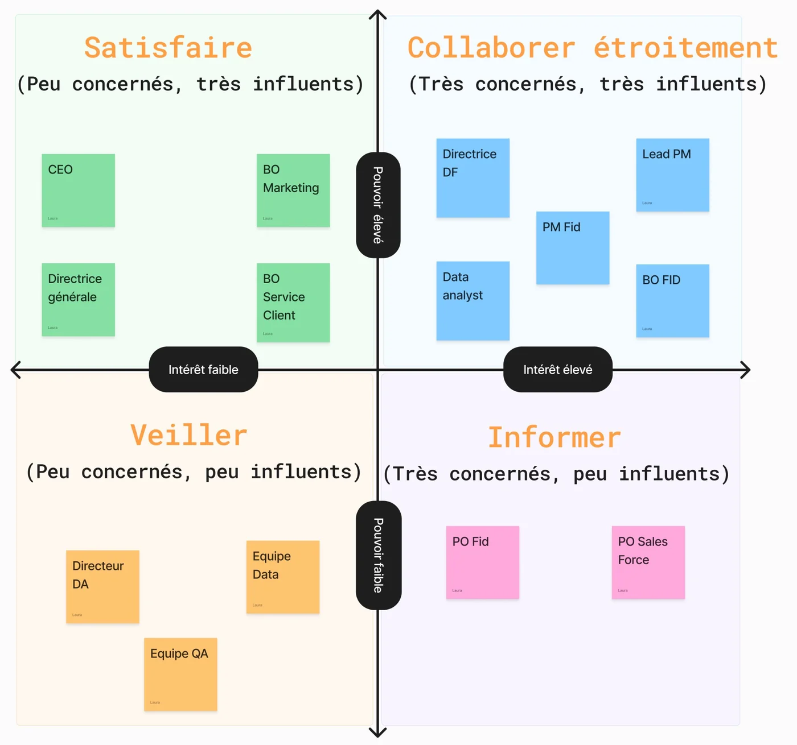

Cadrage
- ProblèmeLes clients avaient du mal à trouver et à lire les informations produit clés (Nutri-Score, Eco-Score) et ne voyaient pas l’intérêt du programme de fidélité en ligne.
- Ce que j’ai faitCadrage, recrutement et animation de 25 tests utilisateurs, 4 focus groups et 10 ateliers de co-design, puis mise en place d’un processus qui alimente chaque sprint en retours utilisateurs.
- ImpactTuiles produit refondues, page fidélité repensée et en ligne dans l’app, et recherche utilisée pour prioriser la roadmap web et mobile.
Contexte
Contexte et question de recherche
Picard est le leader français du surgelé, avec plus de 1 200 magasins et 12 millions de clients. La recherche s’inscrivait dans un programme de transformation digitale et de migration Salesforce couvrant le site et l’app mobile, où les équipes web et mobile devaient décider quoi améliorer en priorité.
Comment les clients choisissent-ils leurs produits et comprennent-ils le programme de fidélité en ligne, et quels changements les aideraient le plus ?
Objectifs business
- Rendre les informations nutritionnelles et environnementales lisibles en un coup d’œil sur les tuiles produit.
- Améliorer la compréhension et l’usage du programme de fidélité dans l’app. KPI : +3 % de taux de visualisation sur la dernière tuile du carrousel.
- Donner au Produit un moyen fondé sur les utilisateurs pour prioriser la roadmap web et mobile.
Méthode
Approche et méthodologie
- 25tests utilisateurs modérés
- 4focus groups
- 10ateliers de co-design
- 2plateformes : web et app mobile
Chaque méthode répondait à une partie de la question. Les tests montraient ce que les gens font, les focus groups expliquaient pourquoi, et en atelier nous concevions les solutions avec ceux qui allaient les construire.
Afficher le tableau détaillé
| Méthode | Pourquoi cette méthode | Échantillon |
|---|---|---|
| Tests utilisateurs | Observer les comportements réels sur les tuiles produit et le parcours fidélité, tâche par tâche. | n = 25 sur deux études : 14 sur le parcours d'achat complet, 11 sur la fidélité · utilisateurs de moins de 35 ans (1 commande web déjà effectuée) et de 35 à 55 ans (4 commandes web déjà effectuées) |
| Focus groups | Comprendre les attentes et perceptions autour des labels nutritionnels et des avantages fidélité. | 4 groupes · équipes métiers : marketing, programme de fidélité, designers, PM, PO |
| Ateliers de co-design | Prioriser et esquisser des solutions avec le Produit, le métier, la tech et le design. | 10 ateliers · équipes métiers : marketing, programme de fidélité, designers, PM, PO |
Contrainte : la recherche s'est déroulée en parallèle d'une migration Salesforce, les résultats devaient donc s'intégrer au planning des sprints sans ralentir les livraisons.
Cartographie des parties prenantes
Avant chaque projet, j'ai positionné les parties prenantes selon leur pouvoir et leur intérêt. La matrice a guidé la façon d'impliquer chacune d'elles, de la co-conception à la simple information.

- Collaborer étroitement (directrice de la Digital Factory, Lead PM, PM Fidélité, BO Fidélité, data analyst) : impliqués dans le cadrage, les ateliers de co-design et chaque restitution.
- Satisfaire (CEO, directrice générale, BO Marketing et BO Service client) : des synthèses courtes aux moments de décision clés.
- Informer (PO Fidélité, PO Salesforce) : des points réguliers sur les résultats, surtout lorsqu'ils touchaient la migration Salesforce.
- Veiller (directeur artistique, équipes data et QA) : informés quand un changement touchait leur travail.
Données
Synthèse
J'ai codé chaque session, regroupé les observations par thème, puis cartographié le parcours d'achat pour repérer où les clients décrochaient ou hésitaient.
Codage des sessions de test
Pour l'étude sur le parcours d'achat complet, j'ai codé chaque session dans une grille : une colonne par testeur, une ligne par étape du parcours, chaque observation marquée positive, négative ou bloquante, avec les verbatims en bleu.


Journey map du parcours d'achat
À partir du codage, j'ai construit la journey map : l'équilibre entre observations positives et négatives à chaque étape montre où les clients hésitent, et la commande est le point le plus bas.
Recherche
+14 −7
Navigation dans les rayons
+15 −15
Fiche produit
+9 −4
Livraison et retrait
+26 −18
Panier
+11 −7
Commande et paiement
+7 −23
Fidélité
+9 −6
Confirmation
+3 −5
Recherche
Aucune tolérance aux fautes de frappe et pas de suggestions : un produit comme Mix & Miam était introuvable en le tapant.
Tolérance orthographique et suggestions de recherche
Navigation dans les rayons
Pas de notes sur les tuiles produit, des produits en doublon, retour en haut de la liste après chaque ajout ; avis partagés entre pagination et défilement infini.
Notes sur les tuiles, garder la position de défilement
Fiche produit
Appréciée (avis, Nutri-Score, préparation), mais les informations détaillées dans l'accordéon paraissaient fouillis.
Hiérarchie plus claire des informations détaillées
Livraison et retrait
Difficile de passer de la livraison à domicile au click & collect ; des produits deviennent indisponibles après le changement ; le magasin préféré n'est pas proposé.
Changement de service clair, disponibilité affichée plus tôt
Panier
Le mini-panier et la page panier semblaient faire doublon ; les produits indisponibles apparaissaient tard.
Fusionner mini-panier et panier
Commande et paiement
Code promo difficile à trouver (12 testeurs), étapes non cliquables pour revenir en arrière, 3-D Secure pas toujours demandé.
Champ code promo visible, étapes cliquables
Fidélité
Règles des points mal comprises (1 euro = 1 point), expiration peu claire, récompenses mal ciblées, défis trop longs.
Expliquer le fonctionnement et l'expiration des points
Confirmation
Peu de réassurance après la commande.
Récapitulatif clair et prochaines étapes
+ observations positives − observations négatives Irritant Opportunité
Avec leurs mots
C'est fouillis, au niveau de la hiérarchisation des infos, des typos différentes.
Testeuse 7 · à propos des informations détaillées du produitCe serait mieux de proposer plutôt une réduction sur les produits que j'aime plutôt que de m'imposer les produits.
Testeur 10 · à propos des récompenses fidélitéUn peu comme dans les magasins Picard, quand on arrive on a toujours les premiers bacs, on est formatés, c'est le même passage que dans le magasin, ce que je reproduis.
Testeuse 4 · à propos de sa navigation dans les rayonsC'est sûr, c'est pas assez visible !
Testeuse 7 · à propos du champ code promo
Insights clés
Insights clés
-
Insight 1 : Des labels produit peu lisibles et faciles à confondre
Les labels n’étaient pas accessibles et trop petits. Les clients confondaient le Nutri-Score et l’Eco-Score, le label AOP passait inaperçu, et la hiérarchie de l’information sur les tuiles rendait les détails clés difficiles à trouver.
- Preuve
- Tests utilisateurs · 15 participants sur 25
- Décision
- Refondre les tuiles produit : réorganiser la hiérarchie de l’information, agrandir et bien distinguer Nutri-Score et Eco-Score, et mettre en avant le label AOP.
- Résultat
- Nouvelles tuiles en production, avec des informations produit clés plus lisibles.
-
Insight 2 : Le programme de fidélité n’était pas compris
Les clients ne comprenaient pas le fonctionnement du système de points. Sur mobile, le scroll horizontal était difficile et la dernière tuile du carrousel à peine visible : une partie du contenu passait inaperçue.
- Preuve
- Focus groups + tests utilisateurs
- Décision
- Prioriser le parcours fidélité dans la roadmap et repenser la page fidélité, en expliquant simplement les points et en facilitant la navigation dans le carrousel.
- Résultat
- Nouvelle page fidélité en ligne dans l’app.
-
Insight 3 : Recherche et filtres ralentissaient les clients
Le système de filtres était complexe, les mêmes produits apparaissaient dans plusieurs filtres, et la barre de recherche ne proposait aucune suggestion de saisie.
- Preuve
- Tests utilisateurs · 12 participants sur 25
- Décision
- Utiliser la suggestion de recherche
- Résultat
- Pas inscrit à la roadmap à ce moment-là
-
Insight 4 : Des études ponctuelles ne suffisaient pas pour suivre le rythme des sprints
Les équipes avaient besoin de retours utilisateurs à chaque sprint, alors qu'une étude ne livrait ses résultats qu'à la fin.
- Preuve
- Demandes du Produit et de la tech pendant la migration
- Décision
- Recommander une recherche continue qui alimente chaque sprint
- Résultat
- Pas non plus inscrit à la roadmap à ce moment-là
Impact
Recommandations et impact
- Tuiles produitRefonduesNutri-Score et Eco-Score plus lisibles
- Page fidélitéEn ligne dans l’appParcours priorisé dans la roadmap
- RoadmapPrioriséeRésultats utilisés pour les arbitrages web et mobile
- Research opsChaque sprintRetours utilisateurs intégrés à chaque sprint
- Portée12 M de clientsPlus de 1 200 magasins, web et app
Rétrospective
Ce que j’ai appris et ce que je ferais autrement
- Les ateliers de co-design avec les équipes tech et métier ont accéléré l’adoption des recommandations, parce qu’elles les avaient construites.
- Ce que je ferais différemment : mesurer une base de référence avant la refonte, pour montrer l'impact des nouvelles tuiles et de la page fidélité avec des indicateurs avant / après clairs.
- Impliquer plus tôt les équipes magasin aurait relié les parcours en ligne et en magasin : beaucoup de questions sur la fidélité naissent en caisse.
Confidentialité. Certaines données, écrans et verbatims ont été anonymisés ou simplifiés pour protéger Picard et ses clients. Les chiffres présentés sont ceux que je suis autorisée à partager.